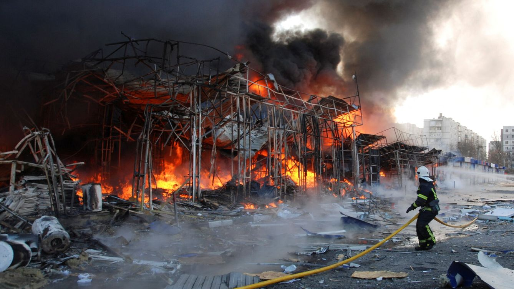
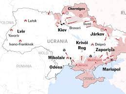

This is a paragraph, shown in the Arial font.
UCRANIA, EL PAÍS DE LAS BOMBAS
Ucrania (en ucraniano: Україна; TR: Ukraïna [ukrɑˈjinɑ] ( escuchar)) es un Estado soberano ubicado en Europa Oriental. Su forma de gobierno es la república que se rige por un sistema semipresidencial, con la separación de los poderes ejecutivo, legislativo y judicial. Su territorio está organizado según un Estado unitario compuesto por veinticuatro óblast, la República Autónoma de Crimea y dos ciudades con un estatus especial: Kiev y Sebastopol.nota 1 Ucrania cuenta con una superficie de 603 628 kilómetros cuadrados y una población de 41 732 779 habitantes. La ciudad de Kiev es la capital y la ciudad más poblada del país. El idioma oficial de Ucrania es el idioma ucraniano y la religión predominante es el cristianismo ortodoxo.

Ucrania (en ucraniano: Україна; TR: Ukraïna [ukrɑˈjinɑ] ( escuchar)) es un Estado soberano ubicado en Europa Oriental. Su forma de gobierno es la república que se rige por un sistema semipresidencial, con la separación de los poderes ejecutivo, legislativo y judicial. Su territorio está organizado según un Estado unitario compuesto por veinticuatro óblast, la República Autónoma de Crimea y dos ciudades con un estatus especial: Kiev y Sebastopol.nota 1 Ucrania cuenta con una superficie de 603 628 kilómetros cuadrados y una población de 41 732 779 habitantes. La ciudad de Kiev es la capital y la ciudad más poblada del país. El idioma oficial de Ucrania es el idioma ucraniano y la religión predominante es el cristianismo ortodoxo.

La historia de Ucrania comienza en el año 882 con el establecimiento de la Rus de Kiev, una federación de tribus eslavas orientales, que llegó a convertirse en el Estado más grande y poderoso de Europa durante el siglo xi.6 Tras la invasión mongola de mediados del siglo xiii, la unidad territorial desapareció, y el área fue dividida y gobernada por diversas potencias, incluidas la República de las Dos Naciones, el Imperio austrohúngaro, el Imperio otomano y el Zarato ruso. Durante los siglos xvii y xviii emergió y prosperó el Hetmanato cosaco, a la postre repartido entre Polonia y el Imperio ruso.
Ayer mismo asesinaron a 500 personas que estaban refugiadas en un bunker en Kiev. Aún no se sabe la causa exacta del exterminio.s

La historia de Ucrania comienza en el año 882 con el establecimiento de la Rus de Kiev, una federación de tribus eslavas orientales, que llegó a convertirse en el Estado más grande y poderoso de Europa durante el siglo xi.6 Tras la invasión mongola de mediados del siglo xiii, la unidad territorial desapareció, y el área fue dividida y gobernada por diversas potencias, incluidas la República de las Dos Naciones, el Imperio austrohúngaro, el Imperio otomano y el Zarato ruso. Durante los siglos xvii y xviii emergió y prosperó el Hetmanato cosaco, a la postre repartido entre Polonia y el Imperio ruso.
AQUÍ TIENES OTROS ENLACES DE INTERES
Display a list of links as a horizontal menu:
Remove bullets, margin and padding from list: